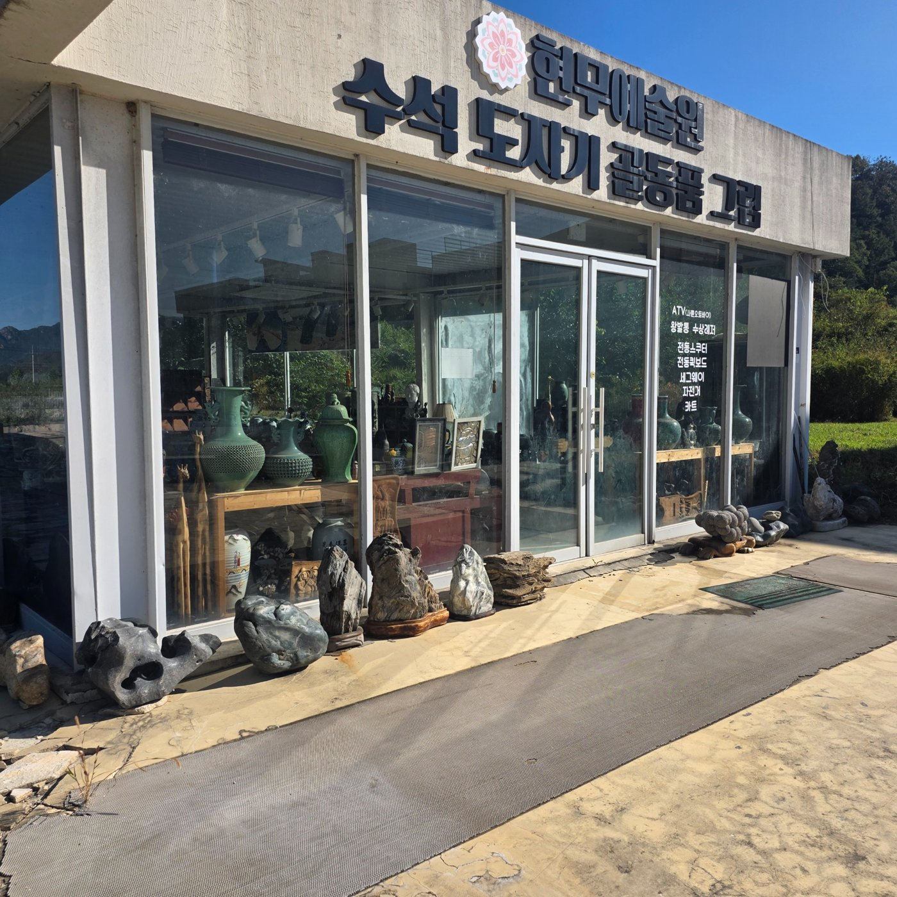

전망 카페
커피와 디저트, 유리창 너머 풍경을 즐기는 조용한 좌석.
커피 · 대화 · 고미술
1층에서는 커피를 사이에 두고 사람을 만나고,
2층에서는 오래된 작품의 새로운 주인을 만납니다.

공간에서 시작하는 사업
현장 자료와 TTC 사업계획을 바탕으로 구성한 운영 계획입니다.
면적·좌석 수·개장일은 현장 확인 후 확정합니다.
1F / TTC ZONE
TTC는 Table Talk Cafe, 티티씨 테이블톡카페입니다.
조용히 쉬는 손님과 대화를 원하는 손님을 모두 존중합니다.
커피·디저트 이용과 테이블톡 참여를 분리합니다. 대화에 참여하지 않아도 카페를 이용할 수 있습니다. 작품 이야기, 지역 교류, 비즈니스 네트워킹을 대화 주제로 연결합니다.
커피와 디저트, 유리창 너머 풍경을 즐기는 조용한 좌석.
서로 대화를 원하는 손님끼리 인사와 이야기를 나누는 좌석.
전시 설명과 컬렉터 모임, 로컬 크리에이터의 문화 교류.
2F / 고미술품 작품 경매
도자기·수석·그림 등 현장 전시품을 출발점으로 삼습니다.
사진만으로 진품·제작 시대·작가·감정가는 확정하지 않습니다.
소유·출처 자료, 작품 상태, 위탁 조건을 확인하고 필요한 전문가 검토를 진행합니다.
작품 번호, 크기, 상태, 확인된 설명, 추정가·최저가 등 공개 범위를 정합니다.
참여자 등록, 응찰 규칙, 수수료와 취소·인도 조건을 사전에 안내합니다.
낙찰 확인, 대금 수납, 수수료 정산, 작품 인도와 증빙 보관을 연결합니다.
사전관람 구역 · 경매 진행 구역 · 상담 데스크 · 입출고 및 보관 공간을 구분하고, 손님 동선과 작품 이동 동선의 충돌을 줄입니다.
현재 경매 일정·출품 목록·수수료는 확정 전입니다. 온라인 응찰·결제 기능은 이 템플릿에 포함되지 않습니다.
통합 사업 구조
커피·음료·디저트 판매가 기본입니다. 소셜 타임과 문화 프로그램의 유료 운영 여부는 가격과 운영 기준을 정한 뒤 반영합니다.
위탁 경매의 판매자·구매자 수수료를 구분합니다. 직접 소유 작품 판매는 위탁 경매 수익과 따로 관리합니다.
경매 사전관람객의 카페 이용, 카페 방문객의 전시 관람, 작품 토크와 컬렉터 모임을 하나의 방문 흐름으로 연결합니다.
확정된 투자금·매출·수익률은 제시하지 않습니다. 실제 면적, 방문 수요, 가격과 비용 자료를 확보한 뒤 사업 수지를 작성합니다.
업로드 현장 자료
사진 2장 · 영상 3편
제공 자료 기준 / 촬영 층·정확한 면적은 추가 확인 필요
산과 수변 풍경이 보이는 창가를 카페 체류 공간의 강점으로 활용합니다.
관람 통로와 안전한 보관을 확보하고, 식음료 공간과 작품 취급 공간을 구분합니다.
도착·진입·행사 활용 가능성을 검토합니다. 주차 허용 범위와 대지 경계는 확인이 필요합니다.
약 1분 43초 · 현장 원본 영상의 재생용 압축본
약 4초 · 현장 원본 영상의 재생용 압축본
약 29초 · 현장 원본 영상의 재생용 압축본